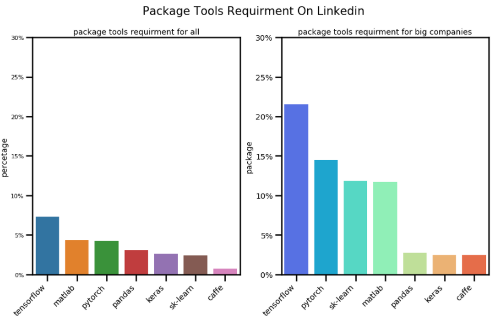

Data Scientist In-Demand Skills
DS Coding Requirement
According to the results of Indeed and LinkedIn analysis, Python’s frequency of appearance is the highest in all companies or big companies, so it sits the top position without any doubt. Thus, Python is the most mainstream programming tool required by data-related job position. It can be seen in the analysis that more than 50% new job positions required proficiency in Python, especially for big companies like FLAG and even more than 60% new job positions require Python.
SQL, ranking second among programming tools, is also very important. The result indicates that more than 40% new job position require SQL in past one month. Thus, for data-related job positions, SQL, as the mainstream querying language to extract data, needs to be mastered by job seekers of data science.
In addition, as a statistical language, R has unique advantages in statistical analysis and visualization. From the results of crawling data of Indeed and LinkedIn, R takes a place on the list of the programing tools requirement by various companies. Generally speaking, about 40% of new job positions require proficiency in R.
For SDE job positions, Java and C are often required in the top priority. Obviously, however, the requirements for these two languages in data-related positions are much weaker. According to analysis of job position from all companies, the two only appear about 20% in job description, but the demand for Java and C in big high-tech companies is higher than that of ordinary companies. About 40% job descriptions mention Java or C because big high-tech companies offer many data engineer positions, requiring algorithms implemented by Java or C.
There are also some companies that mention SAS, a process-oriented programming language in job description. However, the demand is relatively small. Some biopharmaceutical companies or research institutions prefer SAS. For internet companies, SAS is not an essential programming tool.
It is important to notice that there is only one proficient programming mastered by data-related job seekers. Among the job descriptions we crawled, most companies indicate description similar with “Proficiency using one or more programming or scripting language to work with data such as: Python, Perl, or C#”. the analysis only compared the frequency of appearance of each programming tools. In the interview, the interviewer will examine the mastery of the relevant data analysis and visualization, the ability to implement data science algorithms, the familiarity with data science knowledges such as machine learning with the programming tools you prefer. Compared with software engineers, the difficulty of examination for programming skills in data-related job will be greatly reduced and only basic programming skills are required. Instead of programming skills, the capabilities like data sorting, analysis, modeling and visualization is key point in the interview. Thus, we strongly recommend you choose Python as your main programming tool.
DS Knowledge Requirement
For the theoretical knowledge, we first analyzed knowledge modules such as Statistics, Database, Machine Learning, Deep Learning, NLP and etc., in the past month. From the analysis, the requirement for Statistics and machine learning are generally relatively high. In recent month new jobs position from Indeed, more than 50% and 40% of the positions respectively require statistics and machine learning. In big companies like FALG, even more than 70% of new positions explicitly require machine learning and there is a similar situation in LinkedIn. Therefore, the mastery of basic mathematical theory of statistics and machine learning models is the first step to get favorite offer!!
Furthermore, according to analysis, database is also a vital knowledge module for data-related positions. For ordinary companies, the requirement rate of database is about 35%, which is higher the 20% in big high-tech companies and this is consistent with our expectations because you may need to master multiple skills to complete the data science work independently, while you need to focus on a specific area in big companies. Finer division of work in large companies results in that data science worker focus more on data analysis, modeling and visualization.
For the emerging deep learning and NLP(fashionable called AI), the demand for big high-tech companies is obviously higher than that for ordinary. Especially for deep learning, as we know, deep learning algorithm requires a sea of data to train models（Deep learning thus far is data hungry）and the big companies like Amazon and Google own massive data to implement deep learning. In comparison, small companies do not have that much data, so they usually use traditional models to analyze data. If you can master deep learning and understand the use of related package (such as TensorFlow, PyTorch, Keras), it will be a big plus in your data science interview.
DS Concepts Requirement
Above we mentioned the demand analysis of knowledge modules. Besides, we also analyzed the frequency of typical concepts in job description. We counted the counted the top 30 specific concepts related to data science in the past month. From the result, the visualization is a very important ability so we need to convert specific data into graphical representations, and explain to team members what we can see, what we can do, what we can get from data. Thus, the mastery of the package like Matplotlib, seaborn is necessary.
In addition to visualization, there are other important machine learning and statistics concepts such as prediction, optimizing, forecasting, regression, classification, supervised, unsupervised learning, normalization, correlation and etc.. Furthermore, we can also see from the result that data cleaning plays an important role because it can lay the foundation for a good model.
DS Packages Requirement
We analyzed the data science packages required to be used proficiently in job description. It indicates that the package often mentioned are all from Python, which indirectly tell us the importance of Python in data science. For deep learning tools, TensorFlow and Pytorch are the most frequently mentioned packages and their percentages are similar to those of deep learning in big high-tech companies. Matlab is another important tool because it has great advantage in visualization and it also shows the importance of visualization. Sk-learn, as a common tool for machine learning, is not reflected by our analysis diagram and the potential reason is that sk-learn is so basic that it is default skills for job seekers. Beyond sk-learn, pandas also face the similar situation.
DS Big Data Tools

In general, the demand of big data tools is not relatively high, but it is a necessary skill for database-related positions. For big data tools, Spark and Hadoop are the two most mainstream and frequently mentioned tools and for someone who want to work on database and big data, Spark and Hadoop are important.
DS Skills Summary
As data science job seekers, the mastery and understanding of statistics and machine learning are way more important than that of a specific programming language and the programming language is just a tool for implementation. However, you have to be proficient in at least one programming language to support the need of work. Based on the above analysis, first, we strongly recommend Python as your main language and other programming languages as a supplement. Second, master the SQL for extracting data. Third, at least master the basic statistical methods such as hypothesis testing and A/B testing etc. fourth, master some commonly used data science packages. If you hope to improve competitiveness, you should master deep learning’s modeling and implemented methods by specific tools.
Software Engineer In-Demand Skills
Java: Compared with preference of data-related position for Python, whether it is a high-tech giant or a small start-up, soft developer engineer positions generally prefer Java. it makes sense because, after all, except for few websites like YouTube and Instagram which written in Python, most websites and mobile APPs are written in Java. Thus, the demand for Java is relatively considerable in SDE market.
JavaScript: According to our result, the market demand for JavaScript is also considerable. Overall, more than 20% job positions require JavaScript. Note that although there are many similarities (like grammar, naming rules, etc.), Java and JavaScript are two different language. JavaScript cannot be used to create stand-alone applications and it can only run on the browser.
SQL: SQL is a very important skill whether for SDE positions or data-related positions. However, the two focus on different areas. Data-related positions focus on how to extract the data from database for analysis, while SDE positions focus on how to build the database and how to optimize the operating efficiency of the database. Like JavaScript, due to more detailed division of work, the demand for SQL in big high-tech companies is significantly smaller than that in the entire industry.
C: C is an important underlying programming language and many application-level languages are based on C, so the rate of demand for C exceeds 20% no matter it is high-tech giant or the whole industry.
Python: Compared with 60% in the data-relate field, the demand of Python for SDE positions is only 20% to 30%. However, it does not mean that Python is not important. Many SDE positions such as machine learning SDE, AI software engineer require the proficiency in Python. Beside, as we mentioned above, many webs are currently developed by Python.
C++: C++ is rigid demand for performance-sensitive scenarios, but these positions are generally reserved for high-level software engineers rather than enter-level positions.
SDE Skills Summary
Java is the most important programming language for SDE positions, and Java-related entry-level position are also the most. If you have a more detailed plan for long-term career, you can learn a new language based on self-demand. For example, you can improve C and C++ for network architect; you can choose Python for AI or data-related work.